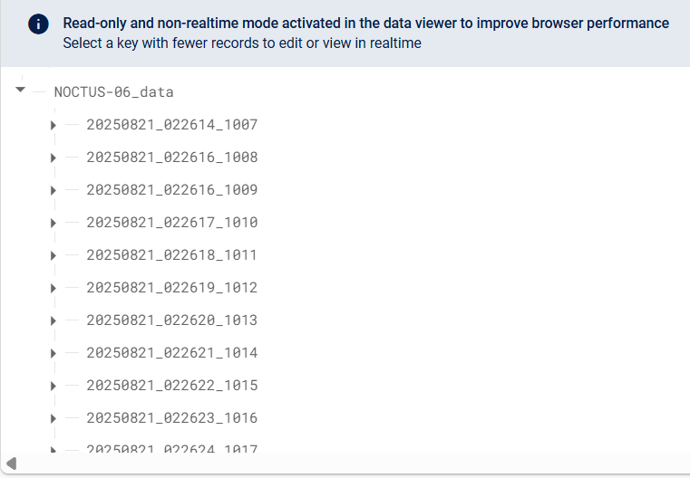
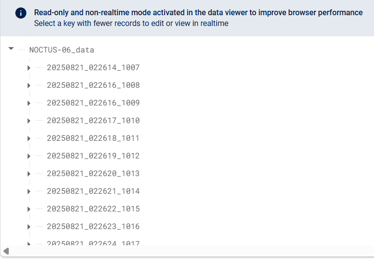

CANSAT (Educational Project)
Our first project as the KAYSat team was to develop a CANSAT, a model satellite the size of a soda can. Through this project, we gained valuable experience in collecting basic sensor data, transmitting it via telemetry, and processing this data. In this work, as Team Captain, I took part in coordinating the integration of electronic systems and the software development processes.
KAYSAT (Teknofest Model Satellite Competition)
KAYSAT is a model satellite we developed for the TEKNOFEST 2023 Model Satellite Competition, designed to perform autonomous tasks according to the competition's requirements. In this project, alongside my responsibility as Team Captain, I also served as the Electrical Subsystem Designer. This process provided an opportunity to apply our theoretical knowledge in a competitive environment and to create a product as a team.
NOCTUS-06 Functional CubeSat and Ground Station Platform
Project Purpose
NOCTUS-06 is a ground-based CubeSat prototype, designed in a 1U format, that collects atmospheric data (temperature, pressure, humidity, CO2, methane, etc.) and transmits this data instantly to a ground station via RF telemetry. This project was undertaken to demonstrate the capabilities for developing low-cost satellite systems and data acquisition platforms.
Technical Specifications
- Sensors: BME280 (Temperature, Pressure, Humidity), MH-Z19 (CO2), MQ-4 (Methane), MQ-9 (Propane), MPU6050 (3-Axis Gyro & Accelerometer)
- Positioning: GY-NEO6MV2 GPS Module
- Processor: Arduino Mega 2560 Pro Mini
- Communication: RF900 Ultra Long Range Radio Modem (Telemetry)
- Power: 2x 18650 Li-ion Battery (7.4V), 5V DC-DC Converter
Core Platform Capabilities
-
CubeSat (NOCTUS-06): Within the 1U chassis, which I personally designed and 3D modeled using SolidWorks, it precisely measures critical data once per second, such as temperature, humidity, pressure, carbon dioxide (CO2), various gases (methane & propane), 3-axis acceleration & gyroscope, GPS position, and system current.
-
Real-Time Data Stream: All telemetry data collected from the satellite is packaged in JSON format and transmitted instantly to the ground station via RF telemetry modules.
-
Desktop User Interface (GUI): The desktop GUI application, which I developed using Electron.js and Flask (Python), visualizes incoming live data in a modern and user-friendly interface, displays the satellite's position on a map, and presents sensor data with real-time graphs.
-
Dual-Layer Data Storage: For reliability and data integrity, I established a dual-layer storage architecture. All telemetry data is saved both to the onboard SD card in CSV format and simultaneously stored in the cloud on Firebase.
Project Gallery
Conclusion and Learnings
This project has provided practical experience in embedded systems programming, sensor integration, power management, and wireless communication. The successful real-time transfer of data in JSON format to a Flask and Electron-based interface demonstrates a complete system integration.


 
